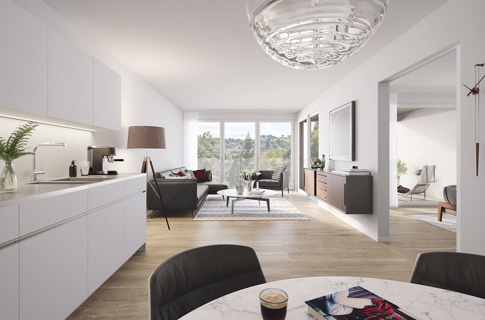

Praktisch
gedacht
Die verwendeten Materialien sind hochwertig und gewissenhaft gewählt, die Apparate erzielen höchste Energieeffizienz. Ein moderner Ausbaustandard ist selbstverständlich. Die Gebäude A, B und D verfügen über eine gemeinsame Tiefgarage. Das Haus C hat durch seine höher gelegene Position eine eigene Tiefgarage. Es sind genügend Parkplätze eingeplant, auch für Fahrräder und Kellerräume. Sämtliche Wohnungen sind bequem mit dem Lift erreichbar.

Lebensqualität.
In jeder Hinsicht.
Für Singles und Paare, die in der Stadt oder Umgebung arbeiten. Für Pendler, die in fünf Fussminuten am Hauptbahnhof sein wollen. Für Familien, die sich Kindergarten, Schule und Einkauf ganz in der Nähe wünschen. Für ältere Leute, die ein vielseitiges Quartier-angebot suchen und es leicht zu Fuss zur Bahn, zum Bus oder ins Zentrum haben möchten.